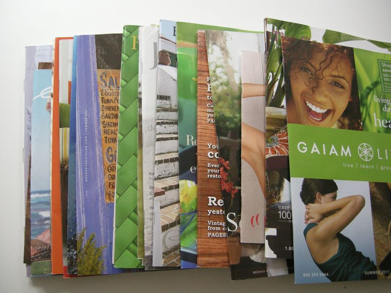

We are soooo happy to be in our new house. But it seems the previous owner had some sort of catalog addiction because we've received 21 product-laden glossies in the past 8 mailing days. Insanity! Instead of taking the easy avoidance route and chucking them into the recycling bin, I decided to bite the bullet and get them cancelled a.s.a.p. In the past I've had success with Catalog Choice, but now it seems they want money for their services. I can't blame them. I also looked into DMAchoice, which is run by the Direct Marketing Association (responsible for all this junk mail). They also want money. (My mistake. There is no fee for this service.) So I went the DIY route. Here's what I did:
1. Opened a bottle of beer (it was 4:30pm, totally acceptable, right?)
2. Started dialing.
3. Always, always, always selected the 'to place an order' option. I figure that your wait time is so much less if they think they have a buyer on the line. The longest I waited was 2 minutes.
4. Typed up a quick list of all the catalogs I cancelled so that I could cross-check each day as new ones hit the mailbox. Most of these catalogs will take up to eight weeks to stop because they pre-print the labels.
5. Recycle bin
One hour went by really fast. And, weirdly, after awhile it was kind of addicting. How fast could I dial? How quickly could I stop the crazy flow of paper into my box? Even though I think it is great to have the option of Catalog Choice, etc. I do think this is the fastest, most direct route.
As an aside, I'd like to hand out a few awards to some of these catalog companies:
Fastest service: Orvis, Frontgate and Gaiam Living. Bravo for instant gratification, folks!
Friendliest service: L.L. Bean and Boston Proper. Almost made me want to keep getting the catalogs. But not really.
Most difficult: Eddie Bauer. C'mon, Eddie. The first time I called the customer service rep said she 'wasn't authorized to remove me from the mailing list' and then she gave me a 'customer service number' (wha?) which ended up being a number for Sears! And they certainly couldn't help me. So I called back the Eddie number and finally got someone who would help me. Boo, Eddie Bauer. Boo!


Recent Comments